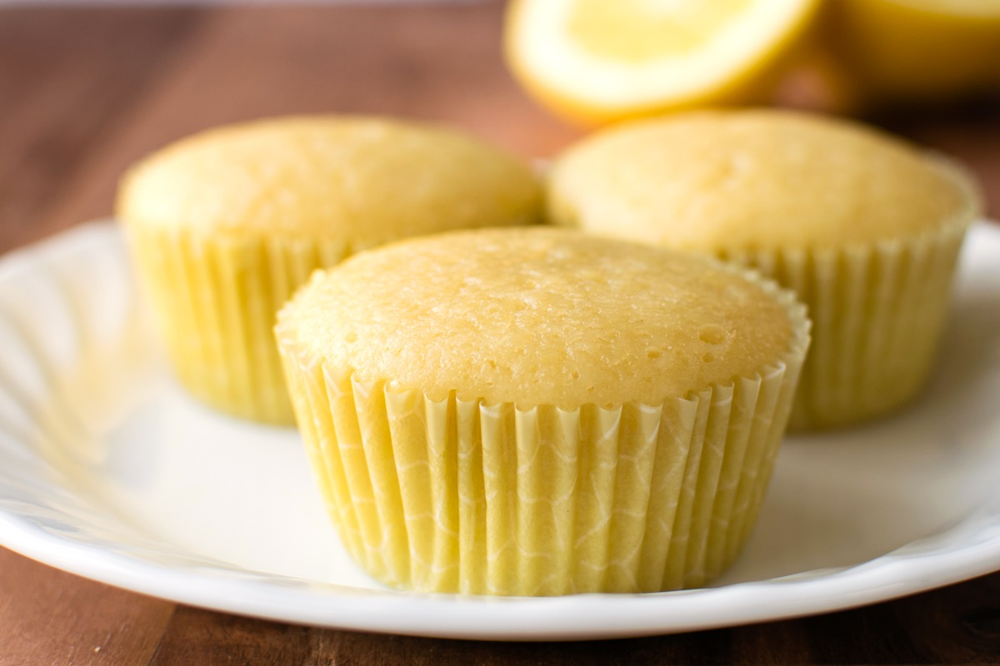

Lemon Cupcakes

Here is a lemon cupcake recipe I use for beautifully delicious treats.
These cupcakes are truly lighter than air, will melt in your mouth and very easy to make.
Ingredients
- 3 cups self-rising flour
- ½ teaspoon salt
- 1 cup unsalted butter, at room temperature
- 2 cups white sugar
- 4 large eggs, at room temperature
- 2 tablespoons lemon zest
- 1 teaspoon vanilla extract
- 1 cup whole milk, divided
- 2 ½ tablespoons fresh lemon juice, divided
Steps
- Preheat the oven to 375 degrees F (190 degrees C). Line 30 cupcake pan cups with paper liners.
- Prepare the cupcakes: Sift flour and salt together in a bowl. Beat butter and sugar together in another bowl with an electric mixer until light and fluffy. Add in eggs one at a time, beating after each addition to incorporate.
Mix in lemon zest and vanilla.
- Gently beat flour mixture into butter mixture, 1/3 at a time, alternating with 1/2 of the milk and 1/2 of the lemon juice after each of the first two additions of flour. Beat until just combined; do not overmix.
- Fill the prepared cupcake liners with batter, 3/4 full, and bake in the preheated oven until a toothpick inserted in the center comes out clean, about 17 minutes.
Let the cupcakes cool in the pans before removing them to finish cooling on a rack, about 10 minutes.
Home